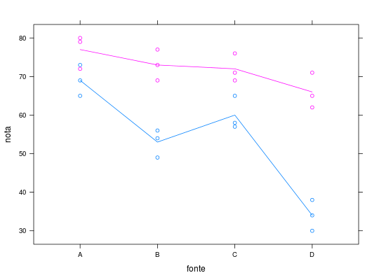

Dados referentes às notas dos alunos em um teste de conhecimento segundo a fonte de informação (tratamento).
Um data.frame com 24 observações e 3 variáveis, em que
blocofontenotaVIEIRA (1999), Tabela 7.7, pág. 81; Tabela 8.2, pág. 94.
library(lattice) data(VieiraTb7.7)#> Warning: data set ‘VieiraTb7.7’ not foundstr(VieiraTb7.7)#> 'data.frame': 24 obs. of 3 variables: #> $ bloco: Factor w/ 2 levels "1","2": 1 2 1 2 1 2 1 2 1 2 ... #> $ fonte: Factor w/ 4 levels "A","B","C","D": 1 1 2 2 3 3 4 4 1 1 ... #> $ nota : num 65 72 56 73 58 76 38 71 69 79 ...xtabs(~bloco + fonte, data = VieiraTb7.7)#> fonte #> bloco A B C D #> 1 3 3 3 3 #> 2 3 3 3 3xyplot(nota ~ fonte, groups = bloco, data = VieiraTb7.7, type = c("p", "a"))